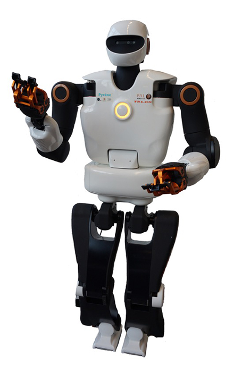

Humanoid robots |
| Robot |
State |
Additional installation instructions |
| Talos |
Tested on real platform.Maintained |
apt-get install robotpkg-talos-dev |
 HRP2 HRP2 |
Tested on the real platform. Maintained |
- Requires access to the private repositories of the HRP2
- Requires the PRIVATE_URI variable to be non null in the install-sot.sh script
|
Mobile robots |
| Robot |
State |
Additional installation instructions |